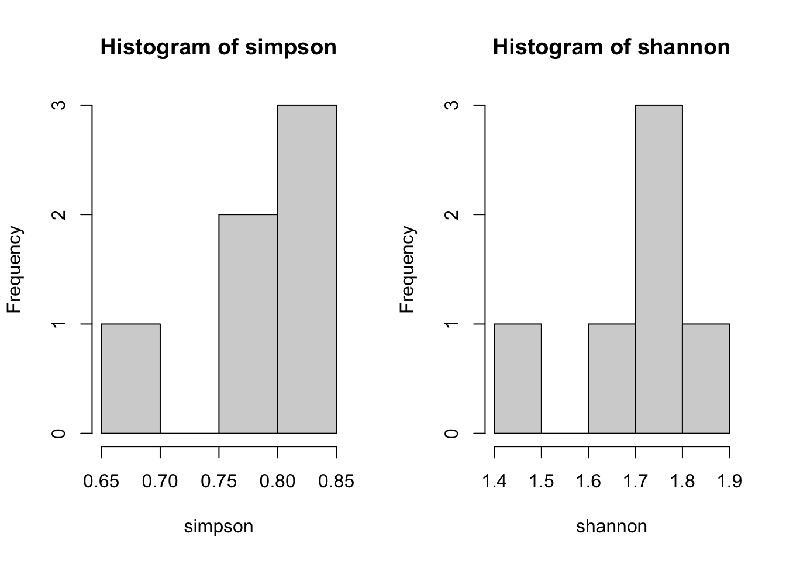
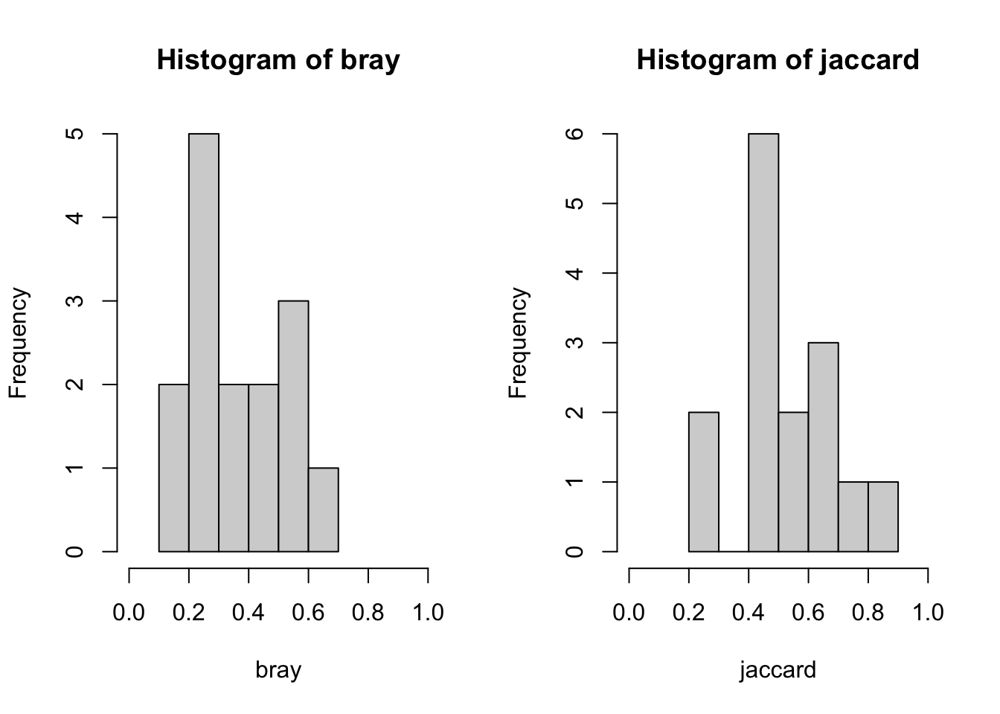

## load tidyverse
library(tidyverse)
## read data
fake_mammals <- read.csv("https://docs.google.com/spreadsheets/d/e/2PACX-1vQ9mfx88nM33PC6WpIh3nSxMvkM98nEszw5gpUq7KdqbiCskF8Pqvrl0W2EqNf9rD1JEepb-hSMIb_j/pub?output=csv", header = TRUE)
fake_insects <- read.csv("https://docs.google.com/spreadsheets/d/e/2PACX-1vT0snHMdsxzzzkxt_JVRFooJDB60lGSJQlrjUU29tGYOhIpqvx_pzja3Eqr9l5b4f76yMFvkiGzuK1Z/pub?output=csv")
## convert species to factor
fake_mammals$species <- as.factor(fake_mammals$species)
## convert site type to factor
fake_mammals$site_type <- as.factor(fake_mammals$site_type)
## convert site to a factor
fake_mammals$site <- as.factor(fake_mammals$site)
## also do for insects
fake_insects$site <- as.factor(fake_insects$site)
fake_insects$site_type <- as.factor(fake_insects$site_type)
## lengthen the order count data
long_insects <- pivot_longer(data = fake_insects,
cols = c(hymenoptera, lepidoptera, coleoptera, diptera,
odonata, hemiptera, orthoptera, ephemeroptera,
tricoptera, plecoptera),
names_to = "order",
values_to = "count"
)17 Summarizing Data
Now let’s describe our data!
Setup:
17.1 Describing With Summaries
You’ll often want to give simple, illustrative information about the data you collected. The tidyverse is great for this! (base R has “aggregate”, which also works, but we won’t go into it here).
17.1.1 tidyverse
The package dplyr in the tidyverse has two wonderful functions: group_by() and summarize(). You can also use the British spelling, “summarise()”, but I use a z because it’s what the founders would have wanted.
Before we use these however, we need to introduce a very useful operator, the pipe: %>%. This operator directs data into the first argument of a function, which allows you to chain functions together efficiently. Let’s try an example with the filter and select subsetting functions (see 14.2.3 Next Steps; Subsetting; Data Frames):
## grab only the forest sites from the insect data
forest_sites <- fake_insects %>% ## take fake_insects and pipe it into filter...
filter(site_type == "forest") %>% ## filter only forest rows, pipe into select
select(site) ## select only the site column
## the whole pipe chain is assigned to "forest_sites"
forest_sites site
1 a
2 b
3 c## this is the same as
forest_rows <- filter(fake_insects, site_type == "forest")
forest_sites <- select(forest_rows, site)Note: base R also has a pipe operator, |>. It’s newer and mostly the same as %>%, so I just haven’t transitioned.
Now, let’s try with group_by() and summarize()! Let’s say you wanted the total number of insects caught at each site (be sure to have pivoted your insect data as described in the setup above!):
## summarize total insect catch
insect_counts <- long_insects %>%
group_by(site) %>% ## group observations
summarize(total_insects = sum(count)) ## sum all insects
insect_counts# A tibble: 6 × 2
site total_insects
<fct> <int>
1 a 84
2 b 87
3 c 136
4 d 60
5 e 61
6 f 51As you can see, the summarize function works a bit like the mutate function, in that you create a new column.
Note that group_by doesn’t visibly change your data, but it changes some attributes that the computer can see when it runs the summarize function. If you forgot which sites are in which type of habitat, you could also include that variable in the group_by arguments (since it doesn’t subdivide the sites, it won’t change the calculation).
insect_counts <- long_insects %>%
group_by(site, site_type) %>%
summarize(total_insects = sum(count))You can also calculate means and variances! You can use the mean, var, and sd functions. Let’s try for each order across all sites:
order_summary <- long_insects %>%
group_by(order) %>%
summarize(count_mean = mean(count), ## you can do multiple sumaries at once
count_var = var(count),
count_sd = sd(count))
head(order_summary)# A tibble: 6 × 4
order count_mean count_var count_sd
<chr> <dbl> <dbl> <dbl>
1 coleoptera 15.8 43.4 6.59
2 diptera 17 163. 12.8
3 ephemeroptera 5.33 171. 13.1
4 hemiptera 6.17 42.6 6.52
5 hymenoptera 8.5 9.1 3.02
6 lepidoptera 5.67 5.87 2.42You could also do this separately by site type:
orders_by_habitat <- long_insects %>%
group_by(site_type, order) %>%
summarize(count_mean = mean(count), ## you can do multiple sumaries at once
count_var = var(count),
count_sd = sd(count))`summarise()` has grouped output by 'site_type'. You can override using the
`.groups` argument.head(orders_by_habitat)# A tibble: 6 × 5
# Groups: site_type [1]
site_type order count_mean count_var count_sd
<fct> <chr> <dbl> <dbl> <dbl>
1 forest coleoptera 20.7 17.3 4.16
2 forest diptera 28.3 9.33 3.06
3 forest ephemeroptera 10.7 341. 18.5
4 forest hemiptera 11.7 14.3 3.79
5 forest hymenoptera 10.3 2.33 1.53
6 forest lepidoptera 4.33 2.33 1.5317.1.2 Saving Summaries
Finally, you can save summarized output with base R’s write.csv() or write_csv() from the tidyverse:
## save summary to your working/project directory
## first argument is data, second argument is filename
write.csv(orders_by_habitat, "order_summary")When saving output, it can be often helpful to add a timestamp to the saved file name, so you can easily identify when you created it and sort among versions. This is another time when we can use the string combining functions we learned about earlier! (see 16.3.1 String Manipulation, Combining Strings)
## first let's save a timestamp string with "Sys.time"
## I like to format it with the "format" function
## this code results in "YYYYMMDD_HHMMSS" format
## (don't worry about the specifics, but feel free to use this code)
timestamp <- format(Sys.time(), format = "%Y%m%d_%H%M%S")
## then we can use it in our data writing step:
write.csv(orders_by_habitat, paste("order_summary", timestamp, sep = "_"))17.1.3 Making Pretty Tables
The “gt” package is good for this (quick tutorial under construction….)
17.2 Community Ecology
Averages and variances are all well and good but what about ecological measures? Let’s try calculating the measures discussed in 8.4 Ecological Community Descriptors!
17.2.1 Richness
You may be interested in how many insect orders are represented in each site.
Let’s do it in a pipe chain!
## order presence
order_richness_site <- long_insects %>%
mutate(presence = as.numeric(count > 0)) %>% ## create binary presence column
group_by(site, site_type) %>%
summarize(order_richness = sum(presence))`summarise()` has grouped output by 'site'. You can override using the
`.groups` argument.order_richness_site# A tibble: 6 × 3
# Groups: site [6]
site site_type order_richness
<fct> <fct> <dbl>
1 a forest 8
2 b forest 7
3 c forest 9
4 d savanna 6
5 e savanna 7
6 f savanna 6I calculated the presence column by checking if each value is positive (> 0), which returns a logical TRUE or FALSE, and then if you convert a logical variable to a numeric variable, TRUEs become 1s and FALSEs become 0s. Nifty!
17.2.2 Diversity
The vegan (short for vegetation analysis) package contains many useful functions that are widely used in analysis of community data, including diversity( ), which will calculate Simpson’s and Shannon’s diversity indices.
You need to get the vegan package installed to start with.
## load vegan
library(vegan)Loading required package: permuteLoading required package: latticeThis is vegan 2.6-6.1Now let’s calculate Simpson’s diversity index with the insect community data:
# select community ID and insect order (note: this can be any taxonomic distinction, e.g., species, class, functional group, etc.)
insect_community <- fake_insects[, c(1,5:14)] %>%
column_to_rownames("site") # use first column (sites) for row names
str(insect_community) # a data frame with observations of 10 insect orders at 6 sites'data.frame': 6 obs. of 10 variables:
$ hymenoptera : int 9 10 12 9 8 3
$ lepidoptera : int 3 6 4 10 5 6
$ coleoptera : int 16 22 24 12 15 6
$ diptera : int 29 25 31 6 9 2
$ odonata : int 4 6 3 2 4 7
$ hemiptera : int 10 9 16 0 2 0
$ orthoptera : int 12 9 13 21 18 27
$ ephemeroptera: int 0 0 32 0 0 0
$ tricoptera : int 1 0 0 0 0 0
$ plecoptera : int 0 0 1 0 0 0simpson <- diversity(insect_community, index = "simpson") # compute Simpson's 1-D Index of Diversity for each site.
simpson # closer to 1 = more diverse a b c d e f
0.7947846 0.8093539 0.8293685 0.7761111 0.8013975 0.6682045 The same diversity( ) can be used to compute the Shannon Index (and many other diversity indices) by changing the ‘index’ argument:
shannon <- diversity(insect_community) # note that Shannon is the default, therefore you don't have to specify which index to compute.
shannon # Typically ranging from 1.5-3.4, higher = more diverse a b c d e f
1.770415 1.792899 1.897978 1.616152 1.749617 1.406488 Let’s compare the two diversity indices:
par(mfrow = c(1, 2)) # use par to generate panels with 1 row of 2 panels
hist(simpson)
hist(shannon)
The “hist()” function above provides a quick way to visualize the frequency of values for a given variable or index with histograms. We will learn more about data visualization a little later!
17.2.3 (Dis)similarity
Dissimilarity analysis is a good way to explore variability in community composition between different sites. The vegan package also contains powerful functions for calculating (dis)similarity indices. For example, the vegdist( ) function computes pairwise dissimilarity indices, which are used to quantify the compositional dissimilarity (distance) between two different sites. To use this function, your data is expected to be one where the rows are the sites/samples and the columns are the taxonomic groups (e.g. species, orders, functional groups).
Let’s calculate two most commonly used dissimilarity indices, Bray-Curtis and Jaccard indices, for the insect community data:
## Bray-Curtis dissimilarity index
bray <- vegdist(insect_community, method = "bray") # "bray" is the default
bray # values are bounded between 0 and 1, where 0 = same composition, 1 = maximally dissimilar a b c d e
b 0.1228070
c 0.2545455 0.2645740
d 0.3888889 0.4013605 0.5306122
e 0.2689655 0.2972973 0.4517766 0.1570248
f 0.5555556 0.5362319 0.6684492 0.2792793 0.3214286## Jaccard dissimilarity index
jaccard <- vegdist(insect_community, method = "jaccard")
jaccard a b c d e
b 0.2187500
c 0.4057971 0.4184397
d 0.5600000 0.5728155 0.6933333
e 0.4239130 0.4583333 0.6223776 0.2714286
f 0.7142857 0.6981132 0.8012821 0.4366197 0.4864865## Compare the two dissimilarity indices
par(mfrow = c(1, 2))
hist(bray, xlim = range(0.0,1.0))
hist(jaccard, xlim = range(0.0,1.0))
17.2.4 Potential Next Steps
The next steps would be to do some sort of cluster analysis, such as principal components analysis (PCA) or non-metric multidimensional scaling (NMDS), to see where community associations exist. However, we are only sticking to the basics for now.
Also, the ‘BiodiversityR’ package contains some useful routines and utilities for examination of community data.